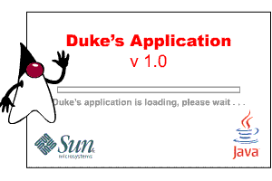

Casi todas las aplicaciones modernas tienen una pantalla de bienvenida. Habitualmente las pantallas de bienvenida son usadas para los propósitos siguientes:
Las Clases de la Fundación Java, tanto Swing como el Abstract Windowing Toolkit (AWT), capacitan a un desarrollador para crear una pantalla de bienvenida en las aplicaciones de tecnología Java. Sin embargo, ya que el objetivo principal de una pantalla de bienvenida es suministrar al usuario con información sobre el inicio de la aplicación, el retardo entre el inicio de la aplicación y el momento cuando la pantalla de bienvenida se muestra debería ser mínimo. Antes de que la pantalla de bienvenida pueda mostrarse, la aplicación tiene que cargar e inicializar la Máquina Virtual de Java™ (JVM, en inglés), AWT, Swing, y algunas veces también librerías dependientes de la aplicación. El retardo resultante de varios segundos ha hecho uso de Java ™ pantalla de bienvenida basada en tecnología menos que deseable.
Afortunadamente, Java™ SE 6 proporciona una solución que permite a la aplicación visualizar la pantalla de bienvenida más pronto, incluso antes de que la máquina vitual se inicia. Un iniciador de aplicaciones Java es capaz de decodificar una imagen y mostrarla en una ventana simple no decorada.
La pantalla de bienvenida puede visualizar cualquier imagen gif, png, o
jpeg, con transpariencia, translucidez, y animación. La figura de abajo representa un ejemplo de
pantalla de bienvenida para una aplicación Java con un fichero gif animado.

La clase
SplashScreen
es usada para cerrar la pantalla de bienvenida, cambiar la imagen de la pantalla de bienvenida, obtener la
posición o tamaño de la imagen, y pintar en la pantalla de bienvenida. Una aplicación no puede crear una
instancia de esta clase. Sólo una instancia única creada dentro de esta clase puede existir, y esta instancia
puede ser obtenida usando el método estático getSplashScreen(). Si la aplicación no ha creado la
pantalla de bienvenida en el inicio a través de línea de comandos o la opción del fichero-manifiesto, el nétodo
getSplashScreen devuelve null.
Habitualmente, un desarrollador quiere mantener la imagen de la pantalla de bienvenida en pantalla y mostrar
algo sobre la imagen. La ventana de la pantalla de bienvenida tiene una superficie de superposición con un
canal alfa, y esta superficie puede ser accedida con un interfaz Graphics2D tradicional.
El trozo de código siguiente muestra como obtener un objeto SplashScreen, después cómo crear un
contexto gráfico con el método createGraphics():
...
final SplashScreen splash = SplashScreen.getSplashScreen();
if (splash == null) {
System.out.println("SplashScreen.getSplashScreen() devolvió null");
return;
}
Graphics2D g = splash.createGraphics();
if (g == null) {
System.out.println("g es null");
return;
}
...
Encuentre el código completo de la demo en el fichero
SplashDemo.java
.
La aplicación SplashDemo usa coordenadas fijas para visualizar la información superpuesta. Estas coordenadas son dependientes de la imagen y calculadas individualmente para cada pantalla de bienvenida.
La pantalla de bienvenida nativa puede ser visualizada de las siguientes formas:
Para visualizar una pantalla de bienvenida desde la línea de comando use el argumento de línea de comando
-splash:. Este argumento es una opción del lanzador de aplicaciones Java que muestra una pantalla
de bienvenida:
java -splash:<nombre fichero> <nombre de clase>
SplashDemo.java
.
splash.gif
en el directorio images.
java -splash:images/splash.gif SplashDemo
nnn.gif. Ejecute la aplicación como sigue:
java -splash:images/nnn.gif SplashDemo
SplashScreen.getSplashScreen() returned null
Si su aplicación es empaquetada en un fichero JAR, puede usar la opción SplashScreen-Image en un
fichero manifest para mostrar una pantalla de bienvenida. Coloque la imagen en el fichero JAR y especifique la
ruta en la opción como sigue:
Manifest-Version: 1.0
Main-Class: <nombre clase>
SplashScreen-Image: <nombre imagen>
SplashDemo.java
.
splash.gif
en el directorio images.
splashmanifest.mf como sigue:
Manifest-Version: 1.0
Main-Class: SplashDemo
SplashScreen-Image: images/splash.gif
jar cmf splashmanifest.mf splashDemo.jar SplashDemo*.class images/splash.gif
java -jar splashDemo.jar
La clase SplashScreen no puede ser usada para crear la pantalla de bienvenida. Sólo una única
instancia creada dentro de esta clase puede existir.
| Método | Propósito |
|---|---|
| getSplashScreen() |
Devuelve el objeto SplashScreen usado para el control de la pantalla de bienvenida.
|
| createGraphics() |
Crea un contexto gráfico (como un objeto Graphics2D) para la imagen superpuesta de la
pantalla de bienvenida, lo cual le permite dibujar sobre la pantalla de bienvenida.
|
| getBounds() |
Devuelve los límites de la ventana de la pantalla de bienvenida. Devuelve los límites de la ventana
de pantalla de bienvenida como un Rectangle.
|
| close() | Cierra la pantalla de bienvenida y libera todos los recursos asociados. |
La tabla siguiente lista el ejemplo que usa pantalla de bienvenida.
| Ejemplo | Dónde Se Describe | Notas |
|---|---|---|
SplashDemo |
Esta sección | Muestra una pantalla de bienvenida antes de abrir la ventana de aplicación. |